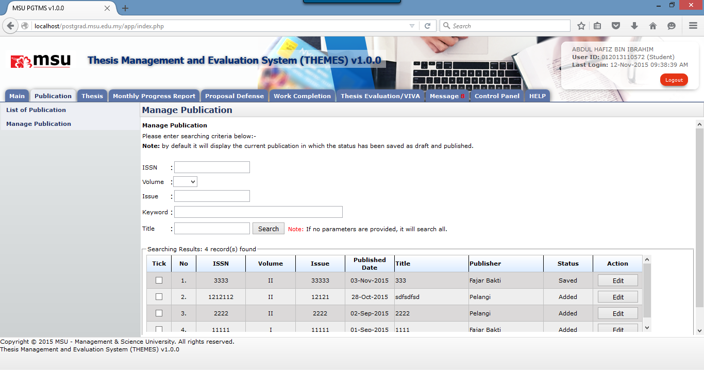
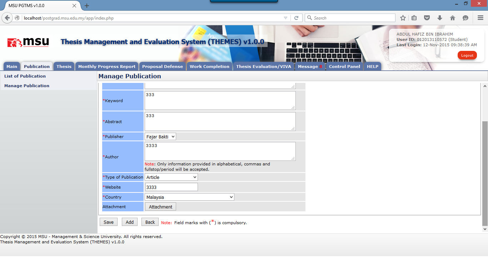

Figure 7: Edit Publication – Saved Mode
Prerequisite
The Publication has been added already.
Steps
- Enter the searching criteria and click the Search button to get the specific search or just click on the Search button to get the general search result.
- Click the Edit button to open the Publication Page.
- Update the publication detail.
- Click Save button to save the changes temporary and unavailable to the other student or click Add button to confirm the changes and available to the other student.
Warning
System will prompt a notification message if the mandatory field indicated by the asterisk (*) is left blank or unselected.
Note
None
Created with the Personal Edition of HelpNDoc: Full-featured Documentation generator